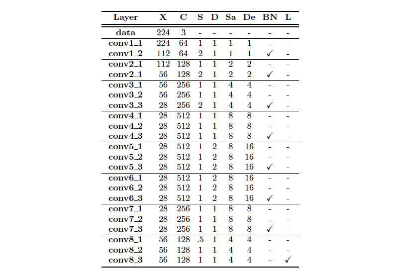
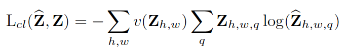
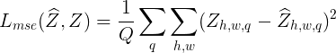
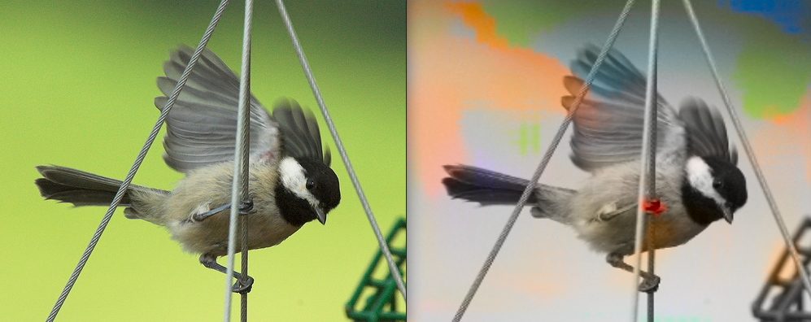
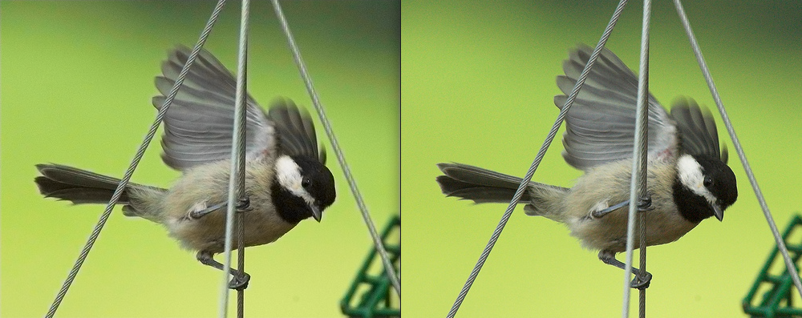
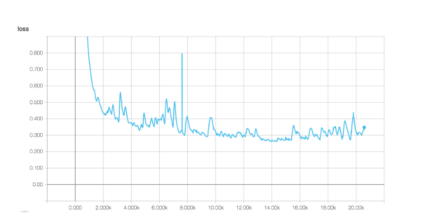
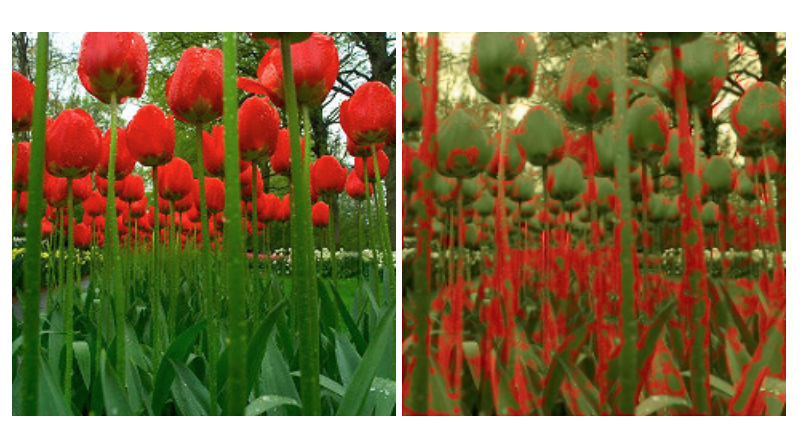

We proposed ourselves a challenging problem: To program from scratch a neural network in order to colorize grayscale images following the ideas proposed in Colorful Image Colorization by Richard Zhang, Phillip Isola and Alexei A. Efros .
. This paper formulates image colorization as a pixel level multimodal classification problem and Deep Learning techniques are used to solve it. Firstly, we had to look for a dataset. As an initial approach we tried with Imagenet. Then, we built a Convolutional Neural Network with multiple layers using the sequential model of Keras and after that, we analysed the performance of two objective functions.
Just as can be seen in the image, given a grayscale image, the model predicts automatically without the use of any image enhancement, the corresponding a and b color channels of the image in the CIE Lab color space.
Similar systems have been develoed by other works, as Larsson et al. , Iizuka et al. Cheng Z et al. ), however the results tend to be desaturated. These methods differ in their CNN architectures and loss functions. While we use a weighted classification loss to rebalance rare classes, Larsson et al. use an un-rebalanced classification loss in a VGG network and Iizuka et al. use a regression loss in a two-stream architecture. Generative Adversarial Nets (GAN) have also been used to predict color and it seems to work well with drawings, if you are interested we encourage you to visit the work of Qiwen Fu et al. ).
We used two datasets to train our model; first we trained on a subset (around 500k images) of the well known ImageNet , due to time and hardware limitations, we ended up switching to a smaller dataset: a flowers image dataset composed of the combination of several datasets from Kaggle and the Oxford University, which contained 14K images. Predicting color has the nice property that training data is largely available. There is no need to label data because any color photo can be used as a training example, simply by taking the luminance as input and its ab channels (color) as the supervisory signal. Therefore, we can say our algorithm uses a self-supervised approach to train by previously converting the source images to grayscale.
We work on the CIE Lab Color space. It expresses each color with three numerical values, L* for the lightness and a* and b* for the green–red and blue–yellow color components. CIELab was designed to be perceptually uniform with respect to human color vision, meaning that the same amount of numerical change in these values corresponds to about the same amount of visually perceived change.
In the preprocessing step we resized all the images to 256x256 in order to have the same input shape. Separated luminosity and chromaticity. The luminosity is input to the network. The chromaticity is projected onto the 313 discretized values creating a soft 1-hot vector for the 10-nearest neighbors weighted with a Gaussian kernel according to their distance to the truth color, and is used as label.
As explained in the paper our work is based on, not all colors have the same probability to appear in an image.
In particular, grayish colors are the most probable. Therefore a neural net predicting only grayish colors has a
higher chance of making a correct prediction. In order to avoid this behavior, a weighted categorical cross
entropy loss is defined (explained later) which penalizes grayish predictions in order to encourage the net to make
more vivid and saturated predictions.
The weights used in this custom loss depend on the probability of each color to appear. Since defining a continuous
probability function for each color would be hardly feasible, their approach consists of discretizing the color space
in 313 different ab values. For each of those 313 values, its probability is computed using the ImageNet database.
The discretization of 313 values can be found in the pts_in_hull.npy file and their probability in prior_probs.npy,
both under the data/ directory. We copied these arrays from the repository of the original paper since computing
them required processing the whole ImageNet dataset and was hardly teaching us much about deep learning.
The architecture proposed in the Colorful Image Colorization paper consists in a CNN composed by 8 layers.
Each layer refers to a block of 2 or 3 repeated convolution layers with a 3x3 filter and a ReLU activation function, followed by a Batch Normalization layer. To preserve the resolution within the block, a padding filter is used.
At conv5 and conv6 a dilated convolution is applied to keep the output resolutions high and avoid the need of upsampling. A dilated convolution is a convolution with gaps (filled in with '0') in the filter. It is effective for a broader view of the input to capture more contextual information and it enables a faster run-time with less parameters.
The following table lists the layers used in the architecture during training time.

X: Spatial resolution of output
C: Number of channels of output
S: Computation stride, values greater than 1 indicate downsampling following convolution, values less than 1 indicate upsampling preceding convolution
D: Kernel dilation
Sa: Accumulated stride across all preceding layers
De: Effective dilation of the layer with respect to the input (layer dilation times accumulated stride)
BN: Whether BatchNorm layer was used after layer
L: Whether a 1x1 conv and cross-entropy loss layer was imposed.
The model does not have any pool layer, all changes in size between conv blocks are achieved through spatial downsampling (by increasing stride) or upsampling.
We have tested the two objective functions proposed in Colorful Image Colorization by Richard Zhang, Phillip Isola and Alexei A. Efros .
MSE and a weighted multinomial cross-entropy.
The input of our baseline CNN is the luminance channel X of an image with the size (H,W,1) and the output Z_pred is the predicted probability distribution over a set of possible colors of shape (H,W,313), as it is explained in the class rebalancing section.
In order to compare Z_pred predicted against the ground truth, we need to define a Z which is the result of a soft-encoding from the truth colors to the space of quantized values. This Z is a soft 1-hot vector for the 10-nearest neighbors weighted with a Gaussinan kernel according to their distance to the truth color.
The first proposed objective function is the Mean-Squared Error loss between the ground truth Z and the predicted values Z_pred. This loss function was already implemented by Keras.
According to Colorful Image Colorization by Richard Zhang, Phillip Isola and Alexei A. Efros .
, the MSE is not robust to inherent ambiguity and multimodal nature of the colorization problem. The MSE results in giving the mean color of the set to all images, in other words, giving grayish and desaturated images.
To counter this effect, it is proposed a second approach: the weighted categorical cross-entropy. The reweighting of the objective function is done to account for the imbalance problem, as not all colors have the same frequency of appearance.
The weights are defined according the prior smoothed empirical distribution obtained from the repository of the original paper.


Once set up correctly, we got our first results. After 30 minutes we got an intuition that we were doing well!

We decided to overfit the model for some hours by using a mini-batch of 25 images to ensure that the model was working properly. This technique is a way of doing a quick sanity check because if the model cannot overfit a small amount of data, there is a simple bug somewhere.

Once we achieved to overfit the model, we started to train the model with the whole dataset.
Image colorization is an image-to-image problem and can be understood as pixel-wise regression problem. In order to analyse our problem from another approach we tried to understand it as it: Our input grayscale image could be classified in Q possible classes, in other words, in the Q possible quantized colors values. A known and not difficult to implement architecture was the U-Net. So we implemented a 2D U-Net using Keras framework and tried to do overfit to one mini-batch. However, we discovered that the network we had designed had not capacity enough to deal with our problem as it was unable to overfit un mini-batch of size 15 for 20k iterations. Our 2D U-Net had 712.177 parameters against the 32.240.377 of the baseline architecture. A future experiment should be increasing the number of filters for each convolutional layer. The following figures are the training loss function and a predicted sample of the mini-batch.  
We decided to train our model with two different loss functions to compare the results. We used the Mean Squared Error and the Weighted Cross Entropy.
The results obtained can be found in the last section, we can easily see that the model with the Weighted Cross Entropy performs much better than the Mean Squared Error does. The predicted images with the Weighted Cross Entropy are more similar to the ground truth and more saturated and realistic.
An iteresting idea to improve our results in automatic colorization is to address it using a conditional GAN as it proposed in Image Colorization using Generative Adversarial Networks by Kamyar Nazeri, Eric Ng and Mehran Ebrahimi . It is a variant of the DBGAN in which the input of the generator is our greyscale image instead of noise. We have implemented a conditional GAN from scratch using Keras and Tensorflow.
The generator is our trained baseline CNN with the pre-loaded weights using weighted cross-entropy loss and the flowers dataset. For the discriminator, we have implemented 5x2 convolutional blocks with stride 2 and kernel size of 3. Every convolution layer is followed by batch normalization, a leaky ReLU activation and a max-pooling layer. Finally, there is a Dense layer to map the input to a scalar output, followed by a sigmoid activation layer. The output of the discriminator is the probability of the input being a fake or real chromacity label. The loss is composed by an adversarial loss (MSE) and our colorization loss, the weighted cross-entropy. The following figure summarizes the main idea. Sadly, we cannot report valid results yet but the code can be found in our gan branch in github.
In the model we were trying to replicate, the output were the logits and the loss function included the computation of the softmax per pixel before comparing. For this reason we did not realize that we were missing in our model a final softmax layer between the output of the model and the loss function.
Since there was no activation. When training with our self-programmed loss function, we were computing logarithms of negative numbers thus resulting in NaNs. Somehow, the default cross entropy loss, was robust to that kind of input and did not fail as our loss, which lead us to think that what was wrong was the loss and not the output of the net.
The main reason we experimented with two different datasets is simple. Once everything was set up, we saw that we had not enough time to train with Imagenet. Each epoch lasted 130h, so we decided to find another smaller dataset with a well defined input domain (not as imagenet which has a lot of different categories).
We chose a mix of flower datasets which would simplify the task and would not require so many training samples. With this approach we reduced the training time and quickly improved the results!
When we reloaded our saved model, Keras changed our customized weighted crossentropy since we had named it with the same name as the default crossentropy. For this reason, in one of our experiments some of the epochs where trained with one loss and some epochs with the other. We fixed this and kept training. In the end, the results between a model trained entirely with the weighted crossentropy loss and the model which has some of its epochs (the intermediate ones) trained with the vanila crossentropy were similar. This makes sense since the losses are not that different, and the model trained partly by another loss can be thought as using pre-trained weights at the start of the training using the weights of a similar problem.
Related to the previous problem, still not knowing that what we needed was a softmax layer, we tried to constrain the output of the model with Relus and sigmoids. However, the net was allowed to predict 1 in all the 64*64*313 output values. The network was doing this because, since we were using a cross entropy loss which performs the logarithm of the output values and since the logarithm of one is zero, outputting all ones was minimizing the loss. Then, in the prediction phase, the color is given by the output times the corresponding 313 colors. Since all the outputs where ones for each pixel, the expectation yielded the mean value, which for the CIE Lab color space seem to be this pink-ish slash red-ish color. We finally found out where the problem was and once we fixed it, the network started working properly.
As we have mentioned before, the prior probabilities of each color that we are using in this project are the ones that they used in the original paper. They were computed taking into account the frequency of each of the 313 discretized color values in the Imagenet dataset. Something that could therefore maybe improve the performance of our model on the flowers dataset would be to compute those probabilities for that dataset in particular.
Flower images dataset:
• 210 images: https://www.kaggle.com/olgabelitskaya/flower-color-images/home
• 4242 images: https://www.kaggle.com/alxmamaev/flowers-recognition/home
• 1360 images: http://www.robots.ox.ac.uk
• 8189 images: http://www.robots.ox.ac.uk
Our GitHub repo